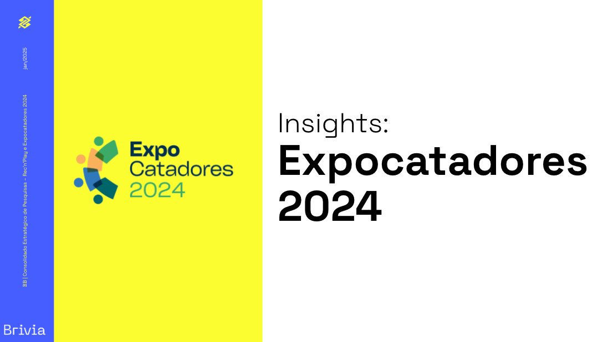
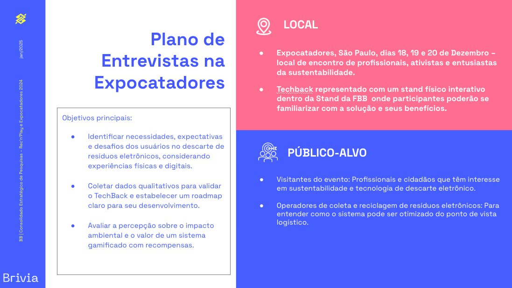
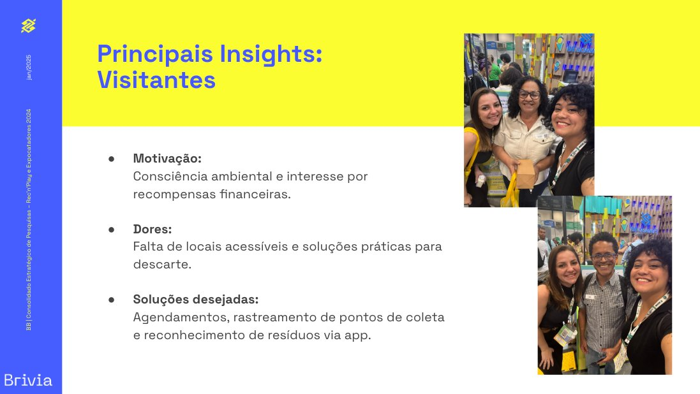
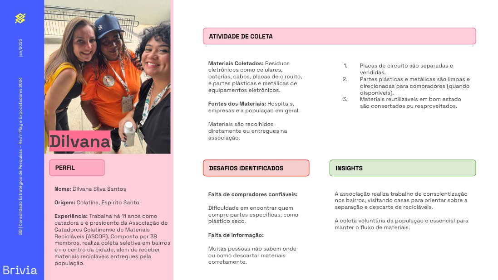
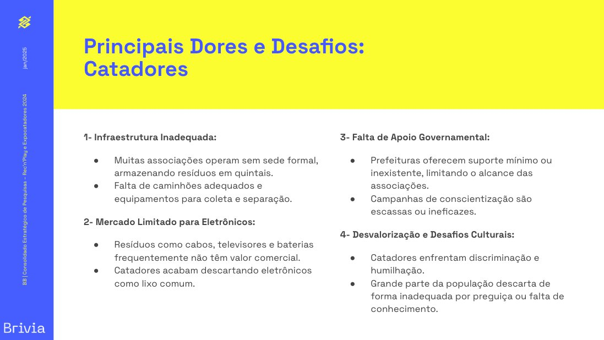
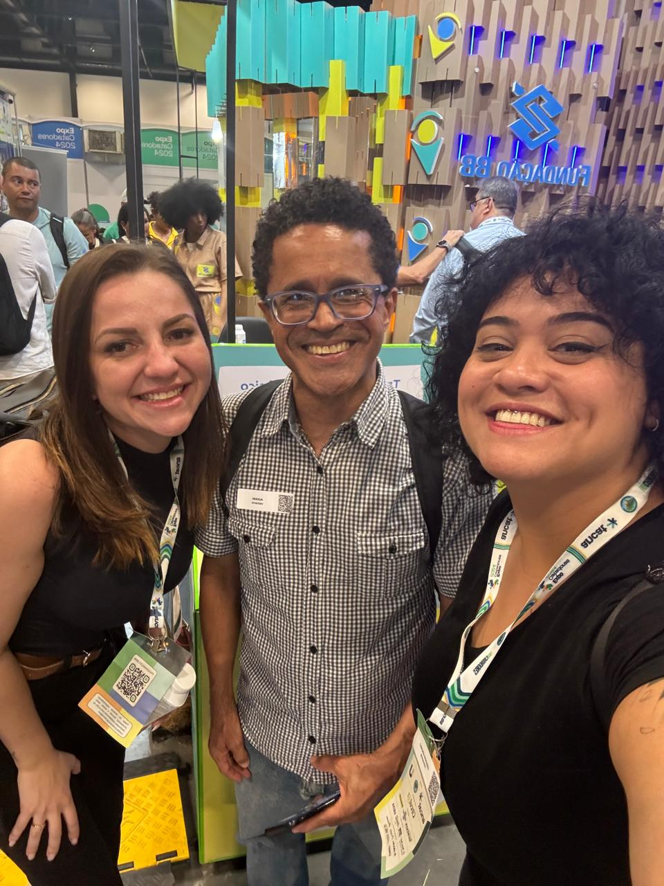
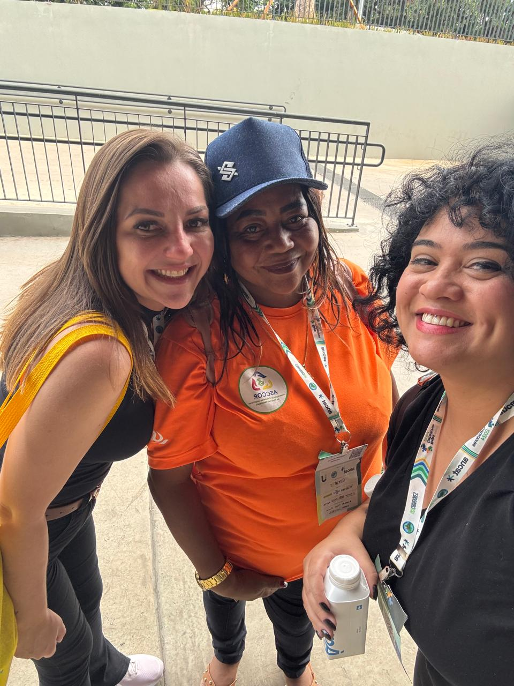

TechBack
BB.
Smart Waste Journey Jornada de Resíduos Inteligentes
Reinventing how Brazil deals with electronic waste Reinventando como o Brasil lida com resíduos eletrônicos
TechBack set out to transform something deeply physical, collection kiosks placed in cities, into a connected digital ecosystem that rewards people for doing the right thing with their electronic waste. But to build something that actually works, you have to understand the full chain: citizens, waste-pickers, cooperatives, operators.
O TechBack se propôs a transformar algo profundamente físico, quiosques de coleta instalados em cidades, em um ecossistema digital conectado que recompensa as pessoas por darem o destino correto aos seus resíduos eletrônicos. Mas para construir algo que realmente funcione, é preciso entender toda a cadeia: cidadãos, catadores, cooperativas, operadores.
Banco do Brasil brought the ambition and the infrastructure. I was brought in as UX Researcher and Strategist to make sure the solution would be grounded in real human behavior, not assumptions.
O Banco do Brasil trouxe a ambição e a infraestrutura. Fui convidada como Pesquisadora UX e Estrategista para garantir que a solução estivesse fundamentada em comportamento humano real, não em suposições.
The research happened inside Expocatadores 2024, the largest circular economy event in Latin America, held in São Paulo in December 2024. TechBack had a physical interactive stand inside the FBB pavilion, which gave us direct access to the people who matter most.
A pesquisa aconteceu dentro da Expocatadores 2024, o maior evento de economia circular da América Latina, realizado em São Paulo em dezembro de 2024. O TechBack tinha um estande físico interativo dentro do pavilhão da FBB, o que nos deu acesso direto às pessoas que mais importam.
Three days. Three audiences. One mission: understand the ecosystem well enough to design something that doesn't exclude the people it claims to serve.
Três dias. Três públicos. Uma missão: entender o ecossistema bem o suficiente para projetar algo que não exclua as pessoas que diz servir.
Without listening to waste-pickers, TechBack Digital risks becoming a solution disconnected from reality. Technology built on assumptions, not on lived experience, excludes the very people who make the circular economy run.
Sem ouvir os catadores, o TechBack Digital corre o risco de se tornar uma solução desconectada da realidade. Tecnologia construída sobre suposições, não sobre experiências vividas, exclui justamente as pessoas que fazem a economia circular funcionar.
The main challenge was bridging two worlds: cutting-edge digital technology and the everyday reality of people who collect and process e-waste for a living. These are often people working without formal headquarters, storing recyclables in their own backyards, navigating a market where electronic materials are worth almost nothing.
O principal desafio era conectar dois mundos: tecnologia digital de ponta e a realidade cotidiana de pessoas que coletam e processam lixo eletrônico para sobreviver. São frequentemente pessoas que trabalham sem sede formal, armazenando recicláveis em seus próprios quintais, navegando um mercado onde materiais eletrônicos não valem quase nada.
At the same time, we needed to understand citizen behavior: why they discard incorrectly, what would motivate them to change, and how a reward system could genuinely move behavior rather than just feel good on paper. Two very different problems, one research sprint.
Ao mesmo tempo, precisávamos entender o comportamento dos cidadãos: por que descartam incorretamente, o que os motivaria a mudar, e como um sistema de recompensas poderia realmente mudar comportamentos em vez de apenas parecer bom no papel. Dois problemas muito diferentes, um sprint de pesquisa.
Three phases, one truth Três fases, uma verdade
Tailored scripts for each audience segment (visitors, waste-pickers, and kiosk operators) with different angles for each profile. Objectives focused on validating TechBack's roadmap and understanding real pain points.
Roteiros personalizados para cada segmento de público (visitantes, catadores e operadores de quiosques) com diferentes ângulos para cada perfil. Objetivos focados em validar o roadmap do TechBack e entender as dores reais.
Conducted in-person at the event across 3 days. Adapted methodology on the spot when participation was lower than expected. Documented field notes, photos, and qualitative observations in real time.
Realizadas presencialmente no evento ao longo de 3 dias. Metodologia adaptada em tempo real quando a participação foi menor que o esperado. Notas de campo, fotos e observações qualitativas documentadas em tempo real.
Consolidated all insights into a structured report mapping pains, motivations, and opportunities. Designed a proposed digital journey covering access, engagement, and reward flows, plus strategic product recommendations.
Consolidação de todos os insights em um relatório estruturado mapeando dores, motivações e oportunidades. Desenho de uma jornada digital proposta cobrindo fluxos de acesso, engajamento e recompensas, além de recomendações estratégicas de produto.
The report that came from the field O relatório que veio do campo
These are screens from the actual research report delivered to Banco do Brasil, compiled from real interviews conducted at Expocatadores 2024 in São Paulo.
Estas são telas do relatório de pesquisa real entregue ao Banco do Brasil, compiladas a partir de entrevistas reais realizadas na Expocatadores 2024 em São Paulo.






The people behind the waste chain As pessoas por trás da cadeia de resíduos
Each interview surfaced a distinct reality. These aren't personas built from demographics. They're real people interviewed at the event.
Cada entrevista revelou uma realidade distinta. Não são personas construídas a partir de dados demográficos. São pessoas reais, entrevistadas no evento.
 VisitorVisitante
VisitorVisitante
Has discarded e-waste before, motivated by environmental awareness, not financial incentives. Wants scheduling, real-time kiosk availability, and cashback directly to her BB app wallet.
Já descartou lixo eletrônico antes, motivada pela consciência ambiental, não por incentivos financeiros. Quer agendamento, disponibilidade do quiosque em tempo real e cashback direto na carteira do app BB.

VisitorVisitanteDescribed the scanning experience as a key differentiator. Wants AI photo recognition of items, real-time kiosk status, and an environmental impact dashboard. Believes financial rewards drive initial engagement but environmental awareness sustains it.
Descreveu a experiência de escaneamento como um diferencial-chave. Quer reconhecimento fotográfico por IA dos itens, status do quiosque em tempo real e um dashboard de impacto ambiental. Acredita que recompensas financeiras impulsionam o engajamento inicial, mas a consciência ambiental o sustenta.
 Waste-pickerCatadora
Waste-pickerCatadora
Operates without formal headquarters, storing materials on her own property. E-waste ends up as common trash because no local market exists to buy it. Faces social discrimination. Needs government support and market creation.
Opera sem sede formal, armazenando materiais em sua própria propriedade. O lixo eletrônico acaba como lixo comum porque não existe mercado local para comprá-lo. Enfrenta discriminação social. Precisa de apoio governamental e criação de mercado.
 Waste-pickerCatador
Waste-pickerCatador
Serves ~208,000 households. Electronic waste has very low market value, described as "cheap as popcorn." No reverse logistics infrastructure. People prefer to leave materials at their door rather than bring them to proper points.
Atende ~208.000 domicílios. O lixo eletrônico tem valor de mercado muito baixo, descrito como "barato que nem pipoca." Sem infraestrutura de logística reversa. As pessoas preferem deixar materiais na porta de casa em vez de levá-los a pontos adequados.

Waste-pickerCatadoraSources from hospitals, companies, and the public. Faces difficulty finding reliable buyers for specific materials (circuit boards, plastics). Does community awareness rounds in neighborhoods to drive correct separation.
Recebe materiais de hospitais, empresas e da população. Enfrenta dificuldade em encontrar compradores confiáveis para materiais específicos (placas de circuito, plásticos). Faz rondas de conscientização em bairros para promover a separação correta.
 OperatorOperador
OperatorOperador
Uses logistics software for optimized routes. Batteries travel to other states for specialized processing. Recommends automatic PEV notifications, cooperative training, and remote monitoring for the TechBack platform.
Usa software de logística para rotas otimizadas. Baterias viajam para outros estados para processamento especializado. Recomenda notificações automáticas de PEV, treinamento de cooperativas e monitoramento remoto para a plataforma TechBack.
What the field actually revealed O que o campo realmente revelou
For waste-pickers, electronic materials generate almost no revenue. Low market value combined with lack of buyers means e-waste often goes to landfill. Financial rewards and cooperative partnerships are essential to change this.
Para catadores, materiais eletrônicos geram quase nenhuma receita. Baixo valor de mercado combinado com falta de compradores significa que o lixo eletrônico frequentemente vai para aterros. Recompensas financeiras e parcerias com cooperativas são essenciais para mudar isso.
Environmental awareness motivates, but friction kills follow-through. Scheduling, real-time kiosk availability, and cashback to familiar channels (like the BB app) are the difference between intent and action.
Consciência ambiental motiva, mas a fricção mata a execução. Agendamento, disponibilidade de quiosque em tempo real e cashback em canais familiares (como o app BB) são a diferença entre intenção e ação.
The full chain depends on waste-pickers and cooperatives. A digital solution that ignores their operational reality (no infrastructure, no formal market, social barriers) serves only part of the ecosystem.
Toda a cadeia depende dos catadores e cooperativas. Uma solução digital que ignora sua realidade operacional (sem infraestrutura, sem mercado formal, barreiras sociais) serve apenas parte do ecossistema.
PEV operators like Reeecicle need automated notifications when kiosks are full, route optimization, and tools to classify materials in real time. Technology that helps the operator runs smoother for everyone downstream.
Operadores de PEV como a Reeecicle precisam de notificações automáticas quando os quiosques estão cheios, otimização de rotas e ferramentas para classificar materiais em tempo real. Tecnologia que ajuda o operador funciona melhor para todos na cadeia.
What I delivered to Banco do Brasil O que eu entreguei ao Banco do Brasil
Tailored scripts for three distinct audiences at Expocatadores 2024 (visitors, waste-pickers, and kiosk operators), each with specific objectives aligned to TechBack's product roadmap.
Roteiros personalizados para três públicos distintos na Expocatadores 2024 (visitantes, catadores e operadores de quiosques), cada um com objetivos específicos alinhados ao roadmap do produto TechBack.
Conducted in-person at the event over three days. Adapted methodology in real time when participation was lower than planned. Full field documentation: notes, photos, and qualitative observations.
Realizadas presencialmente no evento ao longo de três dias. Metodologia adaptada em tempo real quando a participação foi menor que o planejado. Documentação completa de campo: notas, fotos e observações qualitativas.
Structured report with user profiles, main pain points, motivations, and strategic opportunities. Delivered to BB with clear synthesis and actionable insights per audience segment.
Relatório estruturado com perfis de usuários, principais dores, motivações e oportunidades estratégicas. Entregue ao BB com síntese clara e insights acionáveis por segmento de público.
Designed three core flows (access, engagement, and rewards) grounded in research findings and validated against the different user profiles encountered at Expocatadores.
Projetei três fluxos principais (acesso, engajamento e recompensas) fundamentados nas descobertas de pesquisa e validados contra os diferentes perfis de usuários encontrados na Expocatadores.
Evidence-based feature recommendations: waste tracking for transparency, scheduled pickups for citizens, AI-powered item recognition, automated PEV notifications, and cooperative training programs. Plus a 2025 roadmap organized by Quick Wins and Long Actions.
Recomendações de funcionalidades baseadas em evidências: rastreamento de resíduos para transparência, coletas agendadas para cidadãos, reconhecimento de itens por IA, notificações automáticas de PEV e programas de treinamento para cooperativas. Mais um roadmap 2025 organizado por Ações Rápidas e Ações de Longo Prazo.
The 2025 Roadmap built from field research O Roadmap 2025 construído a partir da pesquisa de campo
Every recommendation in the roadmap traces back to something a real person said or showed us at Expocatadores. Research doesn't end at insights. It ends when it shapes what gets built.
Cada recomendação no roadmap remonta a algo que uma pessoa real disse ou nos mostrou na Expocatadores. Pesquisa não termina nos insights. Termina quando molda o que é construído.
"Going to the field, listening to waste-pickers and operators, synthesizing 11 interviews into a service strategy that connects social impact with innovation. That was the work." "Ir a campo, ouvir catadores e operadores, sintetizar 11 entrevistas em uma estratégia de serviço que conecta impacto social com inovação. Esse foi o trabalho."